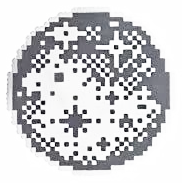
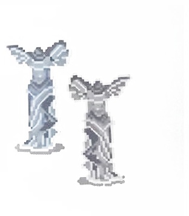
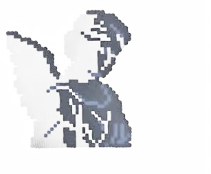
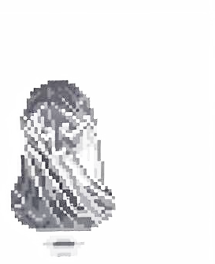
唯美马克思主义 · 幻想批判剧场
南国剧社
NANGUO THEATRE SOCIETY
灵光正在消逝，人们不断死去
下坠以入场
FALL TO ENTER
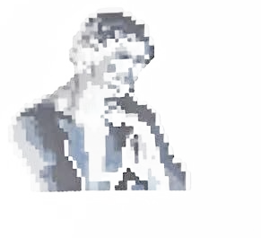
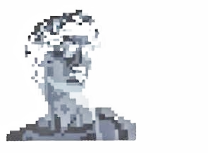
ACT Ⅰ · 南国血脉 THE SOUTH
1924 年，田汉在上海办了一本《南国月刊》。他和欧阳予倩、洪深排演《莎乐美》《名优之死》《卡门》，把话剧这种崭新的艺术推广到整个中国。1930 年，南国社被当局下令解散——灯灭了，灵光第一次消逝。但荧光灯仍在头顶嗡鸣，像戏还没散场。角落里站着一尊石像。它不看人。它在等下一场开幕。1995 年，南京师范大学中文系，陈白尘先生的外孙张弛与同学黄赞扬，在田汉之女、表演艺术家田野老师的指导下，把「南国」两个字重新挂了回去。壁纸的黄，是被时间泡烂的黄，也是被灯光焐热的黄。
2012 年 5 月 24 日。
哈姆雷特在广乐楼 J6 音乐厅醒来。
剧社活了。
孔德罡带着一群文学院的学生，
走一条没人走过的路：
原创先锋舞台剧。
走廊不相信尽头。
每一扇门后都是下一场公演。
2022，十年。灯没有灭过。
ACT Ⅱ · 长廊 THE LONG HALLWAY
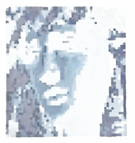
ACT Ⅲ · 灵光仓库 THE ARCHIVE OF AURA
戏演完了，灵光留下来
再往下，黄变成了黑，侧幕条在墙里呼吸。
这里漂着一些碎片——每一场无法复制的演出留下的灵光。
在剧场里，时间是湿的，你拧不干。
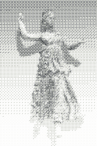
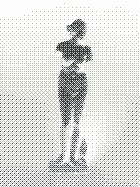
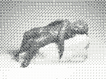
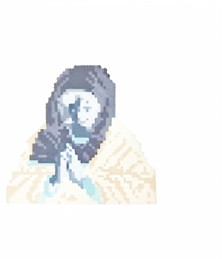
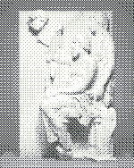
PLAYBILL · 戏 单
一百年，灯灭过，戏没断过
南国社 · 上海 — 田汉与「南国话剧运动」，《南国月刊》创刊｜灵光初现
南国社解散 — 灯灭了｜灵光第一次消逝
南国剧社 · 南京 — 张弛、黄赞扬重建，田野老师指导｜灯丝还烫着
《哈姆雷特2012》 — 广乐楼 J6，重建开篇；「末日狂欢月」同年来袭
《红玫瑰与白玫瑰》/《亲爱的三毛》 — 巡演 9 场遍布 4 所高校，水杉杯一等奖
《洛丽塔 LOLITA》/《Yoko Yoko》 — 首次售票公演，摇滚舞台剧驻演 12 场
《红楼薄命司》 — 13 名女演员的当代女子群像
《戈多先生/小姐的孤独之心俱乐部》/《超越星辰》 — 荒诞与科幻
重建十周年公益展演季 — 四剧连演，紫麓雨花剧场，免费开放
《黄金花霓虹》/《迎向灵光消逝的年代》 — 万历十五年的奇幻史诗，与本雅明的回声
306
场社会公演
50,875
人次在场
20+
国家省市级奖项
ACT Ⅳ · 拣字成戏 THE TYPEWRITER
七出戏的字，都在这把键盘上
键盘上是七出戏全部的字，已经彻底打乱。凭记忆拼出任何一出戏的名字，
飞鸟会替你衔回每一个字。拼成之后，点一下戏名——戏会翻过身来，把故事讲给你听。
已拼出 零 / 柒 出
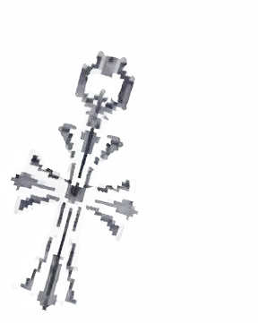
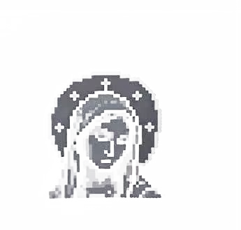
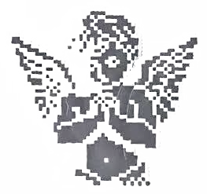
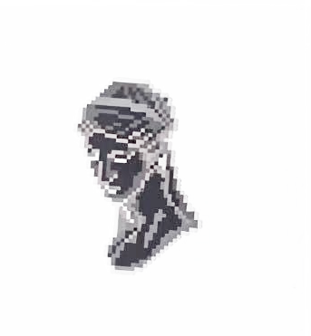
LINES · 台 词
「即使在最完美的复制品里，也缺了一样东西：
此时此地。」— 本雅明
「灵光，是一次遥远的独一无二的显现，
哪怕它近在咫尺。」— 本雅明
「灯亮起来，演员上场，
灵光就在这一晚复活一次。」
「1930 年他们解散了南国社。
1995 年，我们在中文系把它重新点亮。」
「独立，文本，舞台。
除此以外的，都是掌声。」
「世界不会末日，戏不会落幕。」— 末日狂欢月 · 2012
壹 / 陆
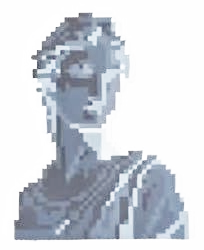
STAGE DOOR · 后台之门
走廊尽头有一扇门。每一场戏散场后都有。
门后是排练厅。你可以开——门不拦你。
门从不拦想上场的人。
「 」
你已敲门 0 次。门在听。